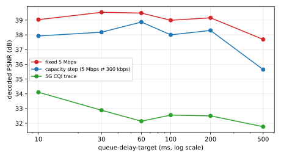
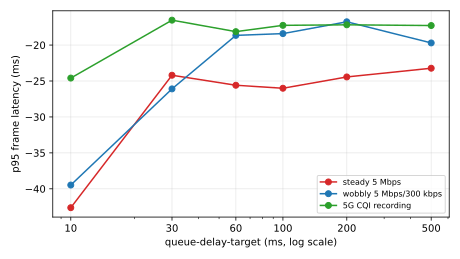

Turning SCReAM's queue-delay-target changes p95 latency on every network we tested, but does not change decoded picture quality (PSNR) — at this workload there is no quality gain to trade for the added latency.
The control loop responds the right way to the knob. As the knob goes from 10 ms to 500 ms on every network, p95 latency moves with it — tighter knob, less latency; looser knob, more latency. SCReAM is doing what its specification says it should.
The encoder does not benefit from extra room at this loose ceiling. Decoded picture quality (PSNR) stays roughly flat and high across the knob range — about 37.7 to 39.5 dB on the fixed 5 Mbps link, 35.6 to 38.9 dB on the capacity-step link (5 Mbps drops to 300 kbps and recovers), 31.8 to 34.1 dB on the 5G CQI trace. The only consistent trend is a slight DROP at the loosest setting (500 ms), so loosening the knob never raises quality. VP8 at this 4000 kbps ceiling already has enough budget to encode this clip; extra buffering does not give it useful extra room.
The quality numbers are trustworthy. The decoded_psnr metric was fixed before this run (frame-accurate self-healing alignment); these ~32 to 39 dB values are believable for the clip and ceiling, and the metric separates this loose ceiling from the tight 800 kbps ceiling in H7 (19 to 34 dB). The earlier broken metric pinned everything near 10 dB and could not.
Limitations
Workload-specific. Tested with realmotion-avi (1280×1024 MJPEG, 10 fps, 60 s). A higher-motion or longer clip might saturate the encoder differently.
Bitrate-specific. Tested at init / min / max = 1500 / 200 / 4000 kbps. H7 re-ran the same sweep at a tight 800 kbps ceiling; the knob still did not raise quality there either.
The "no quality response" claim rests on PSNR. SSIM or VMAF might surface a smaller effect that PSNR misses.
3 reps per cell; effects smaller than the run-to-run spread are not resolved.
Absolute latency numbers carry a clock-skew artifact between aum and veda (same one H4 flagged). The relative comparison across knob values within one sweep is unaffected.
Figures

Decoded PSNR vs queue-delay-target. Flat or falling on every network — loosening the knob does not raise quality.

p95 frame latency vs queue-delay-target. Latency tracks the knob (the relative trend within a sweep is what matters; the absolute offset carries the aum/veda clock-skew artifact).
Tables
Decoded PSNR (dB) by queue-delay-target
network
10 ms
30 ms
60 ms
100 ms
200 ms
500 ms
fixed 5 Mbps
39.03
39.53
39.48
38.99
39.16
37.69
capacity step (5 Mbps ⇄ 300 kbps)
37.92
38.18
38.87
38.00
38.30
35.64
5G CQI trace
34.10
32.88
32.14
32.56
32.50
31.77
p95 frame latency (ms) by queue-delay-target
network
10 ms
30 ms
60 ms
100 ms
200 ms
500 ms
fixed 5 Mbps
-42.63
-24.20
-25.59
-26.01
-24.44
-23.22
capacity step (5 Mbps ⇄ 300 kbps)
-39.48
-26.10
-18.65
-18.41
-16.76
-19.70
5G CQI trace
-24.59
-16.54
-18.13
-17.26
-17.18
-17.28
Experimental setup
h6-qdt-sweep-static
queue-delay-target sweep on the static network, loose 4000 kbps ceiling.